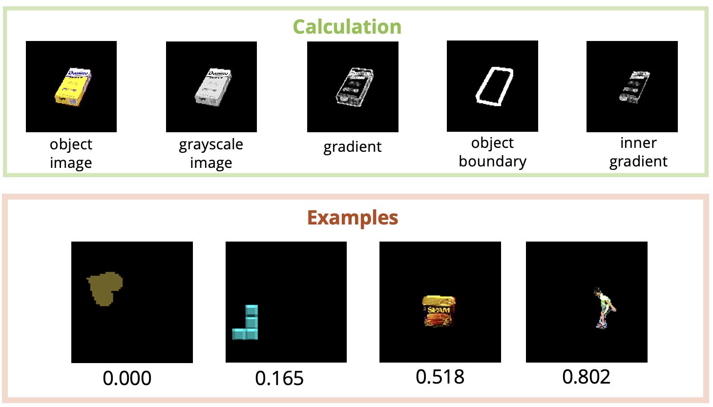
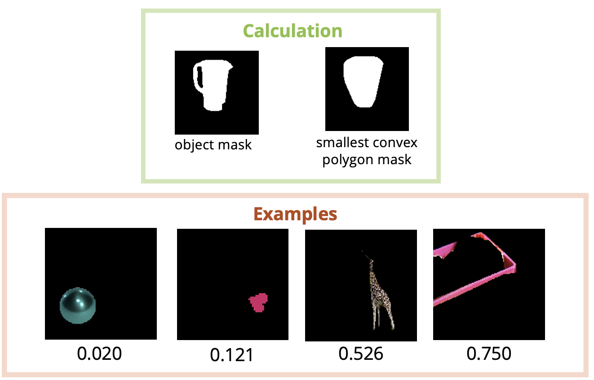
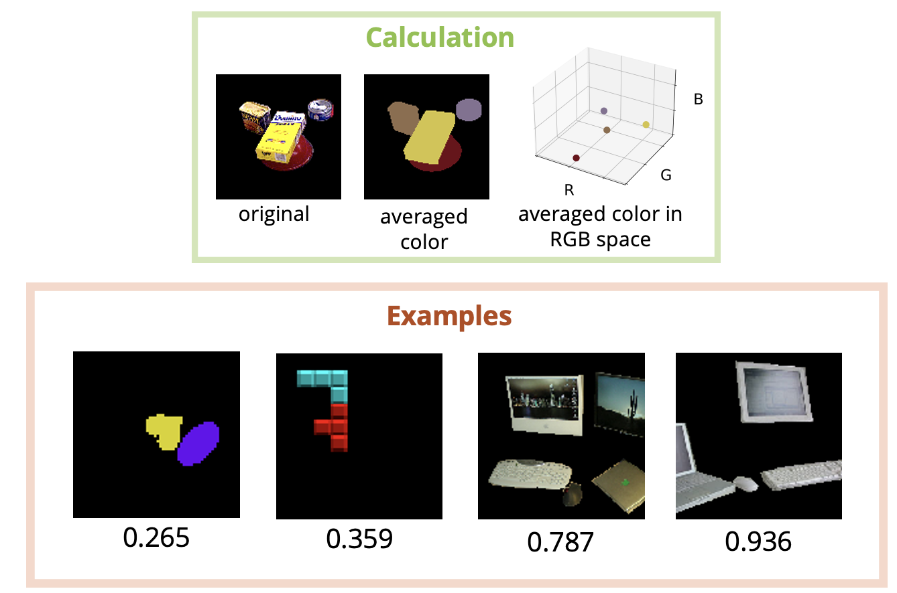
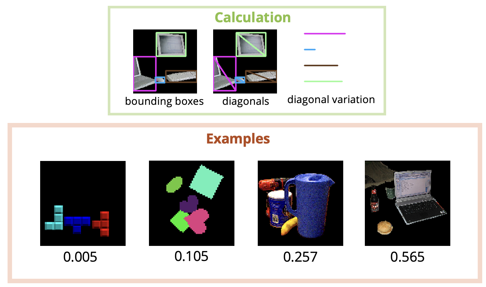

Abstract
In this paper, we study the problem of unsupervised object segmentation from single images. We do not introduce a new algorithm, but systematically investigate the effectiveness of existing unsupervised models on challenging real-world images. We firstly introduce four complexity factors to quantitatively measure the distributions of object- and scene-level biases in appearance and geometry for datasets with human annotations. With the aid of these factors, we empirically find that, not surprisingly, existing unsupervised models catastrophically fail to segment generic objects in real-world images, although they can easily achieve excellent performance on numerous simple synthetic datasets, due to the vast gap in objectness biases between synthetic and real images. By conducting extensive experiments on multiple groups of ablated real-world datasets, we ultimately find that the key factors underlying the colossal failure of existing unsupervised models on real-world images is the challenging distributions of object- and scene-level biases in appearance and geometry. Because of this, the inductive biases introduced in existing unsupervised models can hardly capture the diverse object distributions. Our research results suggest that future work should exploit more explicit objectness biases in the network design.
Video
Short presentation (3min)
Complexity Factors
Object Color Gradient
Object Shape Concavity


Given an RGB image, we first convert it to grayscale, then calculate its gradient horizontally and vertically. Specifically, to avoid the effect from background, we remove gradient from object boundary. The final score is the averaged inner gradient.
Given a binary mask of an object shape, we first find its smallest convex polygon that surrounds the object. Factor value is computed as 1 - area of object / area of convex mask.
Inter-object Color Similarity
Inter-object Shape Variation


Given an image consisiting of multiple objects, we first calculate the average RGB color of each object. In RGB space, we average Euclidean distance between each pair of objects. Factor value if computed as 1 - normalized averaged distance.
We calculate diagonal length of bounding box for each object. The averaged diagonal variation is normalized to be the final factor value.
Results
Standard image clustering benchmarks
(we urge the visitors to click
HERE for random prototype transformation examples)

MegaDepth locations

MegaDepth Florence: detailed results
We show the 6 best qualitatives prototypes learned using DTI clustering with 20 clusters for Florence location in MegaDepth dataset. For each cluster, we show the 20 samples leading to minimal reconstruction errors among all the samples in the cluster as well as corresponding transformed prototypes. Note how it manages to model real image transformations like illumination variations and viewpoint changes.

Instagram hashtags
We show the 5 best qualitatives prototypes learned using DTI clustering with 40 clusters for different Instagram photo collections. Each collection corresponds to a large unfiltered set of Instagram images (from 10k to 15k) associated to a particular hashtag. Identifying visual trends or iconic poses in this case is very challenging as most of the images are noise. You can visualize the type of collected images directly in Instagram: #balitemple, #santaphoto, #trevifountain, #weddingkiss, #yogahandstand.

Resources
Paper

Code

Slides

BibTeX
If you find this work useful for your research, please cite:
@inproceedings{monnier2020dticlustering,
title={{Deep Transformation-Invariant Clustering}},
author={Monnier, Tom and Groueix, Thibault and Aubry, Mathieu},
booktitle={NeurIPS},
year={2020},
}
Further information
If you like this project, please check out other related works from our group:
Follow-ups
- Loiseau et al. - Representing Shape Collections with Alignment-Aware Linear Models (3DV 2021)
- Monnier et al. - Unsupervised Layered Image Decomposition into Object Prototypes (ICCV 2021)
Previous works on deep transformations
- Deprelle et al. - Learning elementary structures for 3D shape generation and matching (NeurIPS 2019)
- Groueix et al. - 3D-CODED: 3D Correspondences by Deep Deformation (ECCV 2018)
- Groueix et al. - AtlasNet: A Papier-Mache Approach to Learning 3D Surface Generation (CVPR 2018)
Acknowledgements
This work was supported in part by ANR project EnHerit ANR-17-CE23-0008, project Rapid Tabasco, gifts from Adobe and HPC resources from GENCI-IDRIS (Grant 2020-AD011011697). We thank Bryan Russell, Vladimir Kim, Matthew Fisher, François Darmon, Simon Roburin, David Picard, Michael Ramamonjisoa, Vincent Lepetit, Elliot Vincent, Jean Ponce, William Peebles and Alexei Efros for inspiring discussions and valuable feedback.